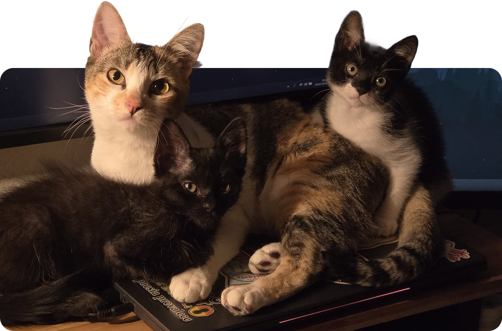

sou a bianca, 25 anos, designer e artista nas horas vagas, brasileira. esse é o meu cantinho na web! o site ainda tá bem em construção, então por favor, tenham paciência kkkk
assim como todo mundo, eu também enchi meu saco de redes sociais com algoritmo otimizado pra lucro e resolvi passar meu tempo online em um lugar mais aconchegante. por favor, se você tiver um site me manda o link! eu amo fazer novos amigos da indie web.

esse site tá sendo codado com uma resolução de 1920x1080 em mente.
✏️ to-do
- fazer o shrine do tiãozinho
- traduzir shrine do hozier
- fazer o shrine do teatro mágico
- abinha de currículo do mês?
- adicionar minha pintura mais recente a /galeria
💬 chat